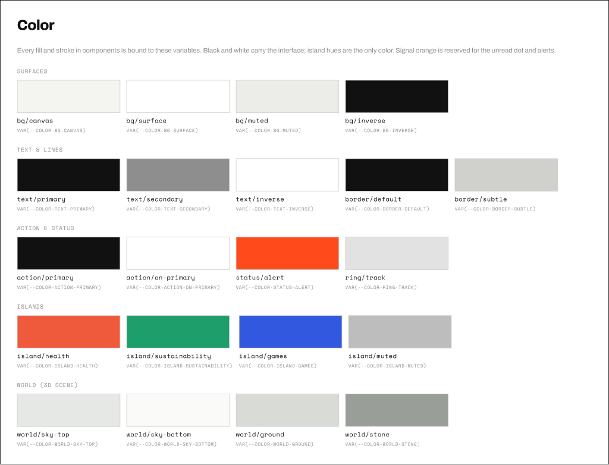
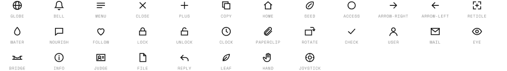
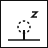
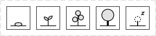
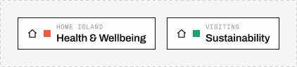
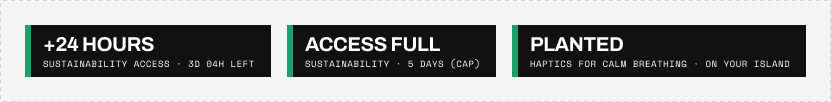
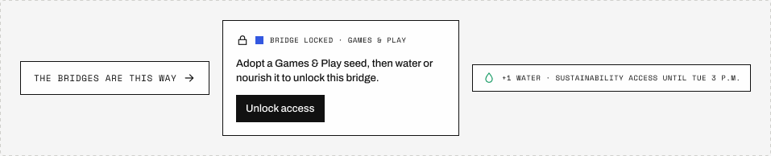

Color
Foundations 12:2Black and white carry the interface. Island hues are the only color. Signal orange is reserved for the unread dot and alerts.

Type
Foundations 12:104Archivo for everything you read. Space Mono for everything that is data: IDs, times, counts, labels.

Icons
Foundations 12:168 · 32 icons24 px, 1.8 px square-cap stroke. Exported from Figma; drawn as a mask so the stroke follows the text color.

Island badges and plant stages
12:404 · 12:433Badge glyphs are placeholders until Ray delivers the island icons (swap the glyph, keep the square).





Icon button
13:69 · HUD, Active · M 46, L 58Square, icon only. Active is the selected state (for example the menu while open). The plus button is L.
Figma fix needed: in the Active L variant (13:64), only the globe's outer circle is set to white. The inner meridian and equator strokes are still black, so on the black square it reads as "( )". The code draws the full globe in white. In Figma, set all three strokes in that instance to text/inverse.
Plus button: the context doc describes a black 58 px square that turns into ×. The Figma variants above don't show the plus button by itself, so "Plus, idle" and "Plus, ready" use the HUD L style with plus and close glyphs. I'll match the Player View screens (Default 20:3, Ready to throw 20:313) in Phase 2.
ID label and island chip
13:81 · 13:105The anonymous ID is the only public name. The chip shows the island you are on, with the home icon, a color square, and the name, so color is never the only signal.

Figma uses the home icon on the Visiting chip too. Worth a look: a different glyph for Visiting would add a second non-color signal.
Toast
13:124 · Access gained, Access full, PlantedTop center for 3 seconds. The island stripe carries the hue; the words carry the meaning.
+24 hours
Sustainability access · 3d 04h left
Access full
Sustainability · 5 days (cap)
Planted
Haptics for calm breathing · on your island

Copy check: the confirmed toast strings are "+48 hours", "+24 hours · Games & Play access: 3 days 4 hours", and "Access full (5 days)". Figma splits them into a title and a detail line with a shorter format ("3d 04h left", "5 days (cap)"). The gallery follows Figma. Confirm the split is fine with the team.
Prompt
13:153 · Edge, Locked, FeedbackFrosted in-world notices. One line, except Locked.
The bridges are this way
Bridge locked · Games & Play
Adopt a Games & Play seed, then water or nourish it to unlock this bridge.
+1 water · Sustainability access until Tue 3 p.m.

Copy check: the Figma Locked prompt ends with a period ("...to unlock this bridge.") and the confirmed copy has none. Minor; flagging it so it's a deliberate choice.
Over the scene
Translucency check on world colorsHUD pieces on the world sky and ground tokens, to check that the frosted surfaces still read.
+24 hours
Sustainability access · 3d 04h left
The bridges are this way